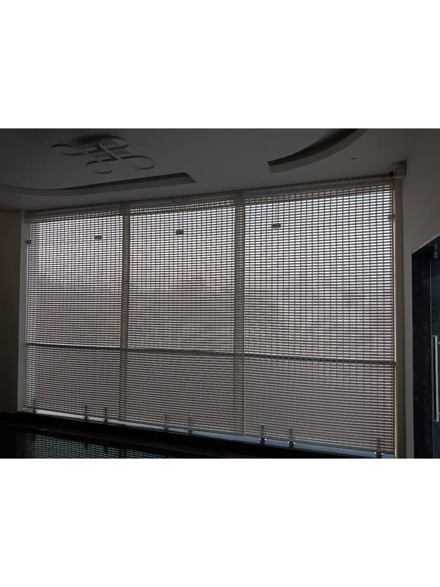
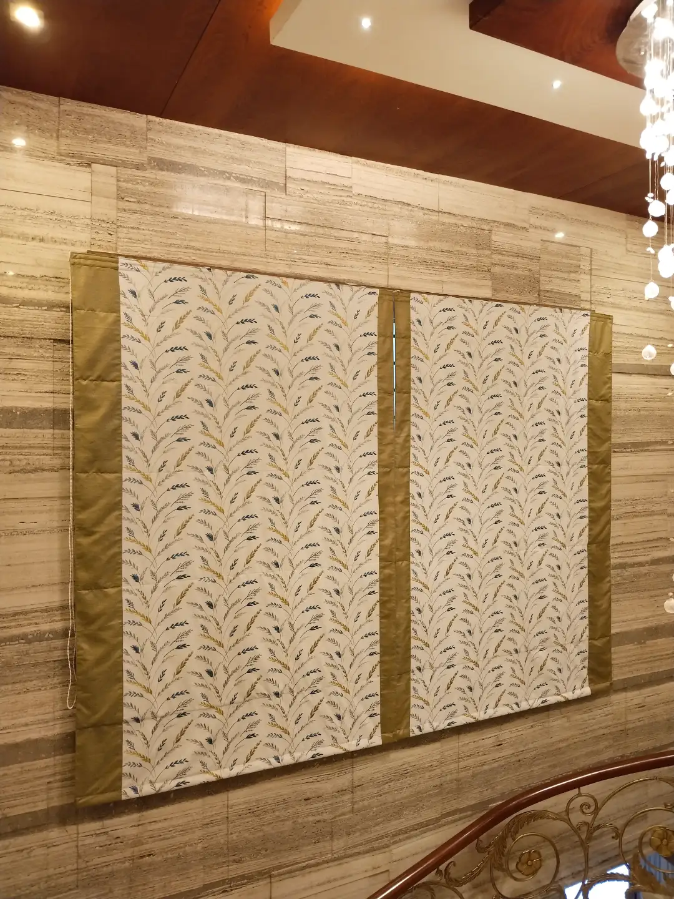
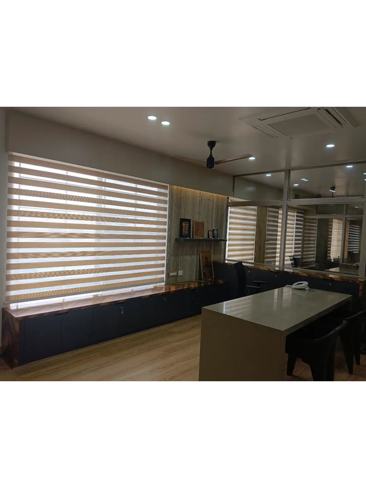
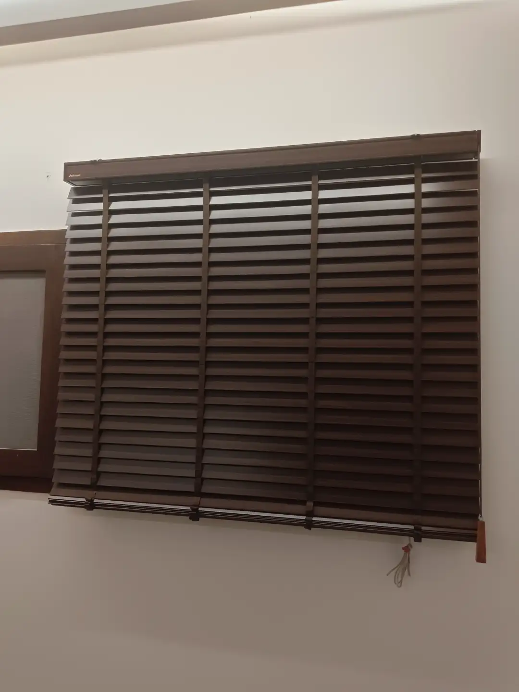

Outdoor & All-Weather Blinds
Built for balconies, verandas and parking areas — our outdoor blinds hold up against rain, wind and strong sunlight while still letting the breeze in.
From sleek indoor roller and zebra blinds to rugged all-weather outdoor blinds for balconies and verandas, Catchy Decors designs and fits blinds across Karur that are easy to operate, easy to clean, and built to last.
Made to measure, expertly installed across Karur town and nearby areas.
Built for balconies, verandas and parking areas — our outdoor blinds hold up against rain, wind and strong sunlight while still letting the breeze in.

Easy-wipe, water-resistant panels ideal for kitchens, bathrooms and Karur's humid weather.

Soft folds bring an elegant, tailored look to living rooms and bedrooms.

Alternating sheer and solid stripes that let you dial light in or out with a simple pull — a modern favourite for living rooms and offices.

Natural wood-slat blinds for a warm, textured look that suits both traditional and contemporary Karur homes.

Clean, minimal roller shades — available with chain operation or motorized control for a smart, effortless finish.
Popular picks for kitchens, offices and living spaces
Roller blinds in Karur are one of our most requested options — a clean, minimal shade that works well in kitchens, home offices and living rooms, available in chain-operated or motorized versions. For wider windows and sliding doors, vertical blinds in Karur give you easy light and privacy control without the bulk of heavy curtains, and they're simple to clean and maintain in Karur's climate.
Every blind is cut and fitted to your exact window, whether it's a single PVC blind for a bathroom or a full-home order of zebra and roller blinds. It's this attention to fit and finish that's made us the choice for people searching for the best blinds shop in Karur — measured, supplied and installed by the same team, start to finish.
One studio for everything from bathroom PVC blinds to rain-ready outdoor balcony blinds.
Blinds are cut and fitted to your exact frame, indoors or outdoors, for a snug, gap-free finish.
We guide you to materials that suit Karur's heat and humidity, so your blinds stay easy to clean for years.
We fit residential blinds, outdoor/balcony blinds and office blinds across Karur. We visit your home for free measurement and design consultation, then handle fabrication and installation from our Karur studio — for Karur town, Thanthonimalai, Vengamedu, Vaiyapuri Nagar, Kamarajapuram, Andankoil, Aravakurichi, Kulithalai, Pugalur and Pallapatti.
What Karur homeowners ask us most
Yes. Our outdoor and all-weather blinds are designed to hold up against rain, wind and strong sunlight, making them a popular choice for balconies, parking areas and open verandas in Karur.
Zebra blinds have alternating sheer and solid stripes that let you control light gradually, while roller blinds use a single fabric panel that rolls fully up or down — both are available with manual or motorized operation.
Yes. Every blind at Catchy Decors is made to measure for your specific windows or openings, with professional installation included.
PVC and all-weather outdoor blinds handle humidity and rain well, while wooden and roman blinds suit indoor living spaces — we help you choose based on the room.
Yes — we visit your home in Karur to measure and recommend materials that suit your space and budget.
Catchy Decors supplies and fits roller, vertical, zebra, roman, wooden and outdoor blinds across Karur, with every blind custom-cut to your window and installed by our own team.
Share a few photos of the space and we’ll suggest the best fit.
Ask for a consultation →